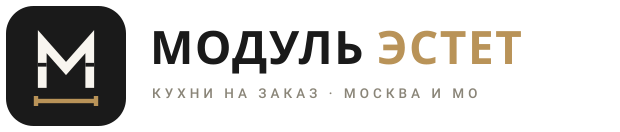
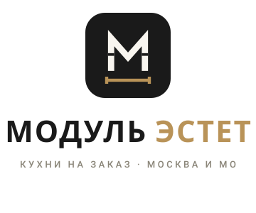
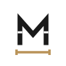

Знак — буква «М», собранная из кухонных модулей (зазоры читаются как фасады), стоящая на золотой размерной линии — отсылка к чертежу и замеру из прелоадера сайта. Палитра и гарнитуры взяты из действующей дизайн-системы.





Если основная «М» не откликнется — два запасных направления в той же стилистике.
Хореография из прелоадера главной страницы: плашка появляется → «М» прочерчивается одной линией →
фаски-модули → золотая размерная линия с засечками. Та же анимация зашита в
logo-animated.svg.
public/brand/logo-mark.svg — знак на плашке (универсальный) ·
logo-mark-light.svg / logo-mark-dark.svg — прозрачные версии
logo-horizontal.svg / logo-horizontal-white.svg — горизонтальные локапы ·
logo-vertical.svg — вертикальный ·
favicon.svg — упрощённый знак ·
logo-animated.svg — анимированная сборка знака
public/icon.svg — адаптивный фавикон ·
прелоадер главной страницы собирает этот же знак вживую